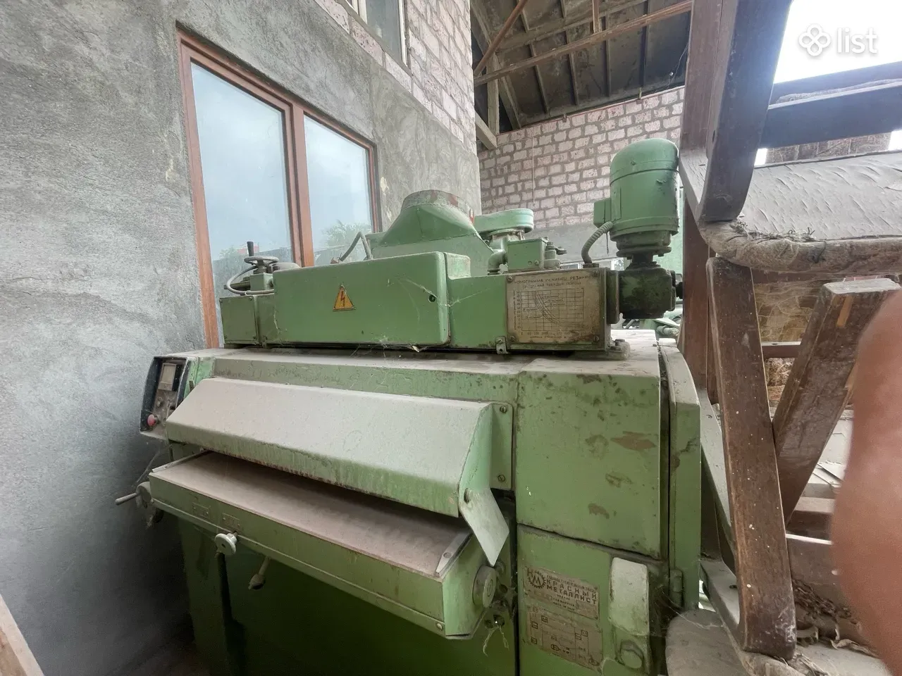
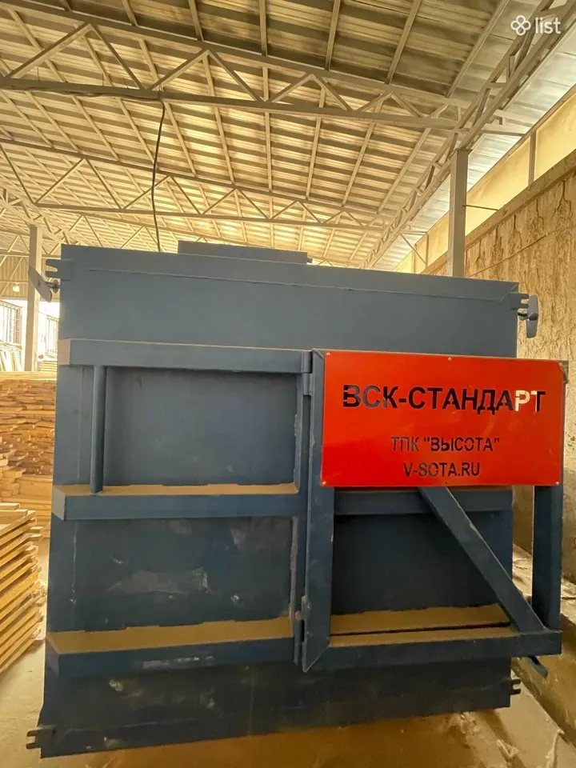

Փայտամշակման սարքավորում՝ աշխատող վիճակում, մեր արտադրամասից։ Կարելի է տեսնել տեղում և միացած ստուգել։Деревообрабатывающее оборудование в рабочем состоянии, с нашего производства. Можно посмотреть на месте и проверить под нагрузкой.

Աշխատանքային լայնություն 80 սմ։ Վաճառվում է աշխատող վիճակում՝ կարելի է գալ և ստուգել միացած։Рабочая ширина 80 см. Продаётся в рабочем состоянии — можно приехать и проверить под нагрузкой.
Վակուումային չորացումը փայտը չորացնում է ավելի արագ և ավելի քիչ ճաքերով, քան սովորական խցիկը։Вакуумная сушка сушит древесину быстрее и с меньшим растрескиванием, чем обычная камера.

Գրեք՝ ինչ տեսակ և ինչ ծավալ է պետք, կասենք առկայությունն ու գինը։Напишите, какой вид и какой объём нужен — скажем наличие и цену.